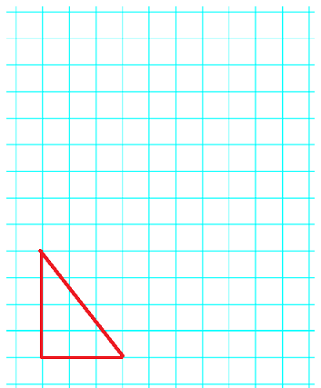

The ratio of corresponding sides in similar figures is constant. But what about the ratio of the areas of the two figures? Will the ratio of the areas be the same as the ratio of the sides?
Subsection6.5.1Areas of Similar Figures
The Pizza Company sells its 8-inch cheese pizza for $5.00 and its 16-inch cheese pizza for $15.00. Which is the better deal: three 8-inch pizzas for $15.00, or one 16-inch pizza for $15.00?
At first it might seem that the smaller pizzas are a better deal, since doubling the diameter of the pizza tripled its price. But with pizza, the better deal is the one that gives you the most pizza for your money, and because pizzas are flat, that means the most area.
\(\blert{\text{Question:}}\) Does doubling the diameter of a pizza double its area?
What about square pizzas? Does a 20-inch square pizza have twice the area of a 10-inch square pizza? In general, if we increase the dimensions of a figure by a particular scale factor, will its area also increase by the same factor?
Activity6.5.1.Scaling Areas.
What happens to the area of a square when we scale up its dimensions? We’ll start with a square that measures 3 inches on each side:
What is the area of the original square?
Area =
Let’s double the side of the square. Compute the area of the new square.
Area =
side = 6 inches
Now we’ll compute some scale factors.
Scale factor for dimensions:
Ratio of new side to original side: \(\dfrac{\text{new side}}{\text{original side}} = \fillinmath{XXX}\)
The original dimensions are scaled by a factor of
Scale factor for areas:
Ratio of new area to original area: \(\dfrac{\text{new area}}{\text{original area}} = \fillinmath{XXX}\)
The original area is scaled by a factor of
How many of the original squares fit inside the new square?
What happens if we triple the original side? Compute the area of the new square.
Area =
side = 9 inches
Compute scale factors again.
Scale factor for dimensions:
Ratio of new side to original side: \(\dfrac{\text{new side}}{\text{original side}} = \fillinmath{XXX}\)
The original dimensions are scaled by a factor of
Scale factor for areas:
Ratio of new area to original area: \(\dfrac{\text{new area}}{\text{original area}} = \fillinmath{XXX}\)
The original area is scaled by a factor of
How many of the original squares fit inside the new square?
Can you see a pattern in the results of your calculations?
Suppose the side of the new square is \(\alert{5}\) times the side of the original square.
Then the area of the new square will be times the area of the original square.
\(\blert{\text{Check}} ~~\) your answer by performing the calculations:
Side of new square:
Area of new square:
Ratio of new area to original area:
You should now have a conjecture about the areas of squares. (A conjecture is an educated guess.) Fill in the blank below.
If we scale (multiply) the sides of a square by a number \(k\text{,}\) then the area of the new square is times the area of the original square.
The discovery you made in the Activity about squares is true for any similar figures.
Area Principle for Similar Figures.
If we multiply each dimension of a figure by \(k\text{,}\) then
The new figure is similar to the original figure, and
The area of the new figure is \(k^2\) times the area of the original figure.
Note6.5.1.
Recall that the exponent 2 in \(k^2\) tells us to multiply together 2 copies of \(k\text{,}\) so \(k^2 = k \times k\text{.}\) For example,
We can use the area principle to solve problems about area.
Example6.5.2.
An architect is drawing up floor plans for a new housing development. The dining room in her plan has an area of only 120 square feet. If she can increase the dimensions of the room by a factor of 1.25, what will the new area be?
The architect would like to scale the dimensions of the dining room by \(k = 1.25\text{.}\) According to the Area Principle, the area of the new dining room will be \((1.25)^2\text{,}\) or 1.5625, times the old area. The new area will then be
Alys wants to replace her old hot tub with a new circular spa. If the radius of the new spa is twice the radius of the hot tub, how much greater will the area of the spa be?
Two three-dimensional objects are called proportional or similar if they have the same shape but different sizes. The properties of similar two-dimensional figures also hold for similar three-dimensional objects.
Properties of Similar Solids.
The ratios of all corresponding dimensions in similar objects are equal.
The corresponding angles in similar objects are equal.
If we scale all the dimensions of a particular object by the same number, the new object will be similar to the old one.
\(\blert{\text{Question:}}\) How are the volumes of similar objects related?
Activity6.5.2.Scaling Volumes.
What happens to the volume of an object when we scale up its dimensions? We’ll start with a box.
Compute the volume of the box with these dimensions.
length = 3 inches
width = 2 inches
height = 5 inches
Volume =
Let’s double each dimension of the box and compute the volume of the new box.
We can use the area principle to solve problems about area.
Example6.5.5.
In Gulliver’s Travels, the Lilliputians are tiny people about six inches tall. How would the volume of a Lilliputian compare to the volume of a human who is six feet tall?
The volume of a Lilliputian would be \(\frac{1}{1728}\) of the volume of a 6-foot tall human. (The weight of a Lilliputian would also be \(\frac{1}{1728}\) of the weight of a human. A 6-foot tall man weighs about 180 pounds, so a Lilliputian would weigh \(\frac{180}{1728}\) pounds, or \(1\frac{2}{3}\) ounces.)
Checkpoint6.5.6.
The radius of Jupiter is about 10.7 times the radius of the Earth. How does the volume of Jupiter compare to the volume of the Earth?
In Problems 1-4, the figures represent centimeter grids.
1.
On the grid below, enlarge the triangle by doubling the lengths of the horizontal and vertical sides. What is the scale factor?
How many triangles of the original size fit inside the enlarged triangle? Draw them in.
Now draw an even bigger triangle by tripling the lengths of the horizontal and vertical sides of the original triangle. What is the scale factor?
How many triangles of the original size fit inside this even bigger triangle? Draw them in.
What is the area of the original triangle? What is the area of the enlarged triangle you drew in part (a)? What is the area of the even bigger triangle you drew in part (c)?

2.
On the grid below, enlarge the parallelogram by doubling the lengths of the horizontal and vertical sides. What is the scale factor?
How many parallelograms of the original size fit inside the enlarged parallelogram? Draw them in.
Now draw an even bigger parallelogram by tripling the lengths of the horizontal and vertical sides of the original parallelogram. What is the scale factor?
How many parallelograms of the original size fit inside this even bigger parallelogram? Draw them in.
What is the area of the original parallelogram? What is the area of the enlarged parallelogram you drew in part (a)? What is the area of the even bigger parallelogram you drew in part (c)?
3.
Record the dimensions of the rectangle, its perimeter and its area in the table below. Complete the table for parts (a) through (c).
Enlarge the dimensions of the rectangle by 50%.
Enlarge the dimensions of the original rectangle by 100%.
Enlarge the dimensions of the original rectangle by 25%.
Base
Height
Perimeter
Area
Original Rectangle
\(\hphantom{0000000}\)
\(\hphantom{0000000}\)
\(\hphantom{0000000}\)
\(\hphantom{0000000}\)
Enlarged by 50%
\(\hphantom{00000}\)
\(\hphantom{00000}\)
\(\hphantom{00000}\)
\(\hphantom{00000}\)
Enlarged by 100%
\(\hphantom{00000}\)
\(\hphantom{00000}\)
\(\hphantom{00000}\)
\(\hphantom{00000}\)
Enlarged by 25%
\(\hphantom{00000}\)
\(\hphantom{00000}\)
\(\hphantom{00000}\)
\(\hphantom{00000}\)
4.
Record the dimensions of the rectangle, its perimeter and its area in the table below. Complete the table for parts (a) through (c).
Reduce the dimensions of the rectangle by 50%.
Reduce the dimensions of the original rectangle by 100%. (Careful: the dimensions of the new rectangle will be 75% of their original size!)
Reduce the dimensions of the original rectangle by 25%.
Base
Height
Perimeter
Area
Original Rectangle
\(\hphantom{0000000}\)
\(\hphantom{0000000}\)
\(\hphantom{0000000}\)
\(\hphantom{0000000}\)
Reduced by 50%
\(\hphantom{00000}\)
\(\hphantom{00000}\)
\(\hphantom{00000}\)
\(\hphantom{00000}\)
Reduced by 250%
\(\hphantom{00000}\)
\(\hphantom{00000}\)
\(\hphantom{00000}\)
\(\hphantom{00000}\)
Reduced by 75%
\(\hphantom{00000}\)
\(\hphantom{00000}\)
\(\hphantom{00000}\)
\(\hphantom{00000}\)
5.
Elina has a 3-inch by 5-inch photograph of her cat, Sinbad. She wants to enlarge the photo by a factor of 1.5 in each dimension.
By what factor will the area of the photo increase?
What will be the area of the enlarged photograph?
6.
For their publicity campaign, the Magazine Sweepstakes staff is making a poster-size version of a check for ten million dollars. A normal check is \(2\frac{1}{2}\) inches wide by 6 inches long, and the poster size version will be 12 times as big in both dimensions.
By what factor will the area increase?
What will be the area of the poster-size check?
7.
Emily made a scale model of her sailboat. Each dimension of her model is one-tenth that of the real sailboat. If the real sail has an area of 75 square feet, what is the area of the model’s sail?
8.
Nora wants to make a copy of a mural covering an area of 10 square meters. She doesn’t have a wall large enough for a full-size copy, so her version will be only one half the size in each dimension. What will be the area of the copy?
Exercise Group.
For Problems 9-10,
Find the scale factor.
Use the scale factor to answer the question.
9.
Here is a box.
If we double all the dimensions of the box, how will its surface area change?
How will its volume change?
10.
Here is a cube.
If we cut all the dimensions of the cube in half, how will its surface area change?
How will its volume change?
Exercise Group.
For Problems 11-12, find two objects that are similar.
11.
12.
13.
A four-inch tall bottle holds 100 cubic centimeters of medicine. How much medicine does a six-inch tall bottle with a similar shape hold?
14.
Angel wants to guess the number of jelly beans in a jar that is 45 cm tall. He finds a jar of similar shape that is 15 cm tall and fills it with jelly beans. It holds 280 jelly beans. What should Angel guess for the number of jelly beams in the taller jar?
15.
An orange of diameter 8 centimeters has a peel of about 200 square centimeters. How much peel would you expect an orange of diameter 10 centimeters to have?
16.
The Dome of the Rock is a shrine located in Jerusalem, and is the oldest surviving Islamic building. The dome itself has a diameter of about 20 meters, and is roofed with lead covered in gold. A model of the dome is 0.5 meters in diameter and required 15.7 square meters of gold leaf. How much gold leaf would be needed to cover the actual Dome?
Exercise Group.
For Problems 17-20, use the following fact: When the dimensions of a solid object are all scaled up, its weight is scaled by the same factor as its volume.
17.
If a 6-foot tall, 180-pound human being were scaled up to a height of 60 feet, what would the giant’s weight be?
18.
A typical boll weevil is 1 centimeter long and weighs 0.0003 grams. If gamma rays produced a mutant boll weevil 5 meters long, how much would it weigh?
19.
The military museum wants to make a scale-model replica of the B2 Bomber. The scale is 1 to 50. The real B2 bomber has a wingspan of 172 feet and weighs 158,100 pounds.
What is the wing-span of the model?
How much will the model weigh?
20.
Bistro Paris is making a four-foot tall model of the Eiffel Tower. The original Eiffel Tower is 984 feet tall and weighs 7300 tons.
What is the scale factor?
How much will the model weigh? (There are 2000 pounds in one ton.)
21.
Solve the problem about pizzas that opened this Lesson: Which is the better deal: $15 for three 8-inch pizzas or $15 for one 16-inch pizza?
22.
At the Chicken Coop, each dimension of the super-bucket of fried chicken is 1.5 times the corresponding dimension of the mini-bucket. Which is the better deal: $24 for three mini-buckets of fried chicken, or $24 for one super-bucket?